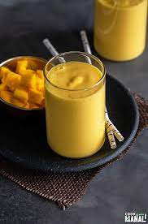

MANGO LASSI

Ingredients
- 1 cup chopped very ripe mango (see how to peel and chop mango), frozen chopped mango, or canned mango pulp
- 1 cup plain yogurt
- 1/2 cup milk
- 4 teaspoons honey or sugar, more or less to taste
- Dash ground cardamom, optional
- Ice, optional
Directions
- Add the ingredients into a blender and blend it all together
- Once blended, serve in your desired glass and garnish with mint leaves.